「科學計算」範例考題
注意，這裡的題號跟老師公佈網頁的題號可能有所出入，請自行尋找自己的題目。謝謝
1. (4%) About the Euler's constant (the base of the natural logarithm e = 2.71828...)
a. Give the formula for Taylor expansion of (x+y)n.
b. Use the above formula to prove the following identity: e = (1+1/n)n as n approaches infinity = 1/0! + 1/1! + 1/2! + 1/3! + …
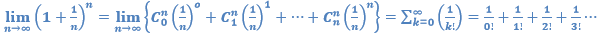
2. Explain why ln(1+r) can be approximated by r as r is close to zero?
①
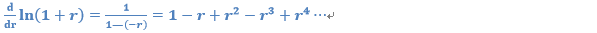
② 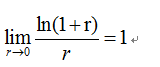
3. This is about "Rule of 72". (Slides, Wiki) （柴剑彬）(蘇筱芫)
a. Please explain what "Rule of 72" (also known as "Rule of 70" or "Rule of 69") is.
A quick method to estimate an investment’s doubling time
That T*r=70（or72）
T=double time in year
r=annual interest rate (%)（in ppt）
一個計算投資須多長時間才可升一倍的方法，其計算方法是假設一個投資回報率（r），然後再用72除以該回報率數字，便得出回報升一倍所須時間(T)（一般以年為單位）。例如投資100元，年回報率為9%，則投資回報升一倍的時間是72/9，即8年。(已含 goal formula example)ps 使用72作為分子是因為它有較多因數，容易被整除
b. Please derive the exact formula for the above rule, assuming ln(1+r) = r when r is much smaller than 1.
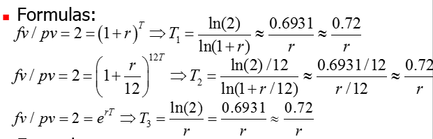
fv: future value pv: present value,
三個式子分別表示，一年收一次利息，一月收一次利息，和連續複利情況下所算出的T
4. Create a magic matrix(似乎寫出來即可，不需要演算法)
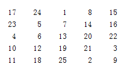
5. Matrix manipulation (不確定指定哪題，故有關矩陣運算皆附上)(or...by趙勗堯)
3.Vector indexing: Given two row vectors x and y of the same length, write a one-line MATLAB statement to achieve the following goals:
a.Multiply element 3 by 5.
x(3)=x(3)*5
b.Append a element 5.
x=[x 0]
c.Delete element 2.
x(2)=[]
d.Concatenate x and y.
z=[x y]
e.Stack x and y.
z=[x;y]
4.Matrix indexing: Given a 5-by-5 matrix matrix A, write a one-line MATLAB statement to achieve the following goals:
a.Delete row 2 of A.
A(2,:)=[]
b.Delete rows 2 and 4 of A.
A([2,4],:)=[]
c.Delete column 3 of A.
A(:,3)=[]
d.Delete columns 3 and 5 of A.
A(:,[3,5])=[]
e.Multiple row 4 of A by 5.
A(4,:)=A(4,:)*5
f.Switch columns 2 and 3 of A.
A(:,[2 3])=A(:,[3 2])
g.Switch columns 2 and 3, and rows 4 and 5, of A.
A=A([1 2 3 5 4],[1 3 2 4 5])
h.Assign a logical variable Y to verify sum of each column of A is equal to 65.
Y=(sum(A)==65)
i.Assign a logical variable Y to verify sum of each row of A is equal to 65.
Y=(sum(A’)==65)
j.Assign a logical variable Y to verify the diagonal sum of A is equal to 65.
Y=(sum(diag(A))==65)
k.Assign a logical variable Y to verify the anti-digonal sum of A is equal to 65.
Y=sum(flipud(A))==65)orY=sum(fliplr(A))==65)
l.Assign B to be the second to fourth elements of column 4 of A.
B=A([2 3 4],4)orB=A([2: 4],4)
m.Assign B to be the concatenation of the third to fifth elements of column 4, and the first to fourth elements of column 5, of A.
B=[A([3 4 5],4);A([1 2 3 4],5)]’orB=A(18:24)
n.Assign B to be the diagonal vector of A, without using "diag" command.
B=[A(1,1) A(2,2) A(3,3) A(4,4) A(5,5)]orB=A([1 7 13 19 25])
o.Assign B to be diag(A, -1), without using "diag" command. (This is, [23 6 19 2] for A=magic(5).)
B=[A(2,1) A(3,2) A(4,3) A(5,4)]orB=A([2 8 14 20])
p.Assign B to be diag(A, 1), without using "diag" command. (This is, [24 7 20 3] for A=magic(5).)
B=[A(1,2) A(2,3) A(3,4) A(4,5)]orB=A([6 12 18 24])
5.Simple math on matrices: Given a matrix A, write a one-line MATLAB statement to achieve the following goals:
a.Find the max. of each row.
max(A’)
b.Find the min. of each colum
min(A)
c.Sort each row.
sort(A’)
d.Sort each column in descending order.
sort(A,’descend’)
e.Find the max. of min. of each column.
max(min(A))
f.Find the max. of min. of each row.
max(min(A’))
Rotation and reflection: Given a n-vertex polygon denoted as a complex vector of n elements z=[z1, z2, ..., zn]. Use a few MATLAB statements to compute the coordinates of the polygon after the following operations.
a.Rotate pi/6 with respect to the origin.
z=z*exp(i*pi/6)
b.Rotate pi/6 with respect to its center (which is the mean of all the vertices).
center=sum(z)/n, d=z-center, d=d*exp(i*pi/6), z=d+center,
A: z1是另外一個z還是真的就是z的第一個element?
B: z的center平移到origin後變成z1
A: 因為Z的第一個element也叫做z1 所以如果是像B說的那樣的話 可能改個名字會比較好
(已改成d)
c.Reflection along a line q=pi/3.
d=z*exp(-i*pi/3), d=conj(d), z=d*exp(i*pi/3)
d.Flip the polygon along a straight of slope 1/2 which passes the polygon's center.
d=z*exp(-i*atan(1/2)), d=conj(d), z=d*exp(i*atan(1/2))
e. What is the rotation matrix? What is the reflection matrix?
Rotation=[cosθ –sinθ;sinθ cosθ]
Reflection=1/(m^2+1)[1-m^2,2m;2m,m^2-1], m=slope
7. 銀行貸款月付額（請列出方程式即可，不必實際求解。）
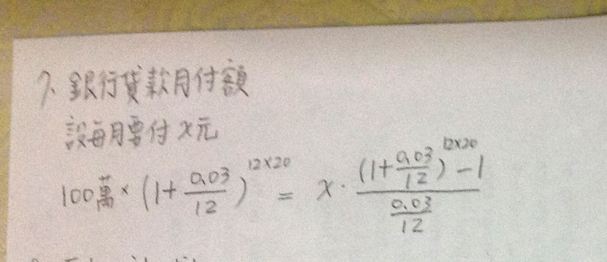
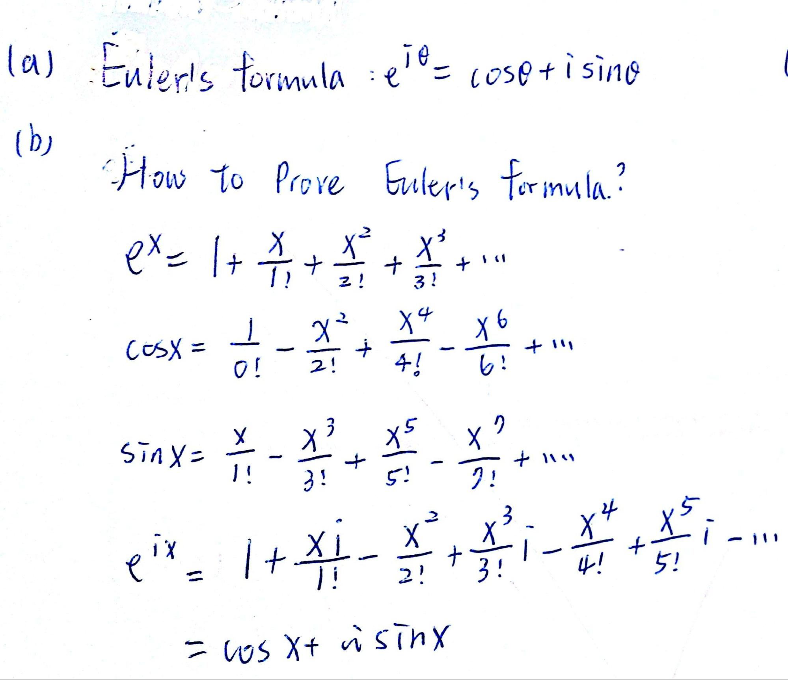
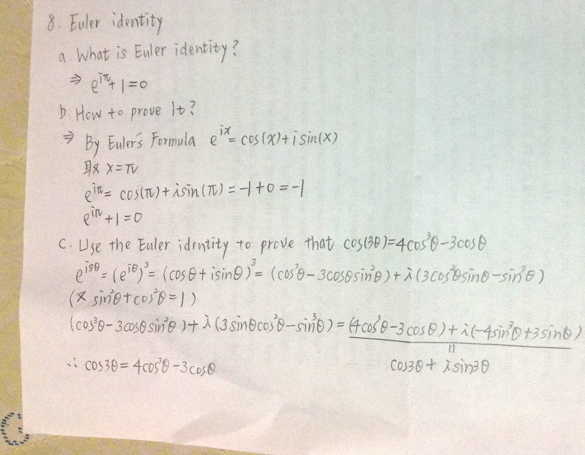
9. Plot of a simple spiral (葉安琪)
(a) theta=0:0.1:8*pi;
plot(cos(theta).*theta,sin(theta).*theta);
(b) theta=0:0.1:8*pi;
polar(theta,theta);
a (d)
b (b)
c (c)
d (a)
e (f)
f (e)
11. Plots of rose curves (Kai Han Lin)
Plots of rose curves: Determine which one of the following plot is most likely to be generated by each of the following commands:
12. Sketch of rose curves (Kai Han Lin)
Sketch of rose curves: Please use the method of "描點作圖" to sketch the following rose curves in the polar coordinate system, assuming the range of θ is between 0 and 2*pi.
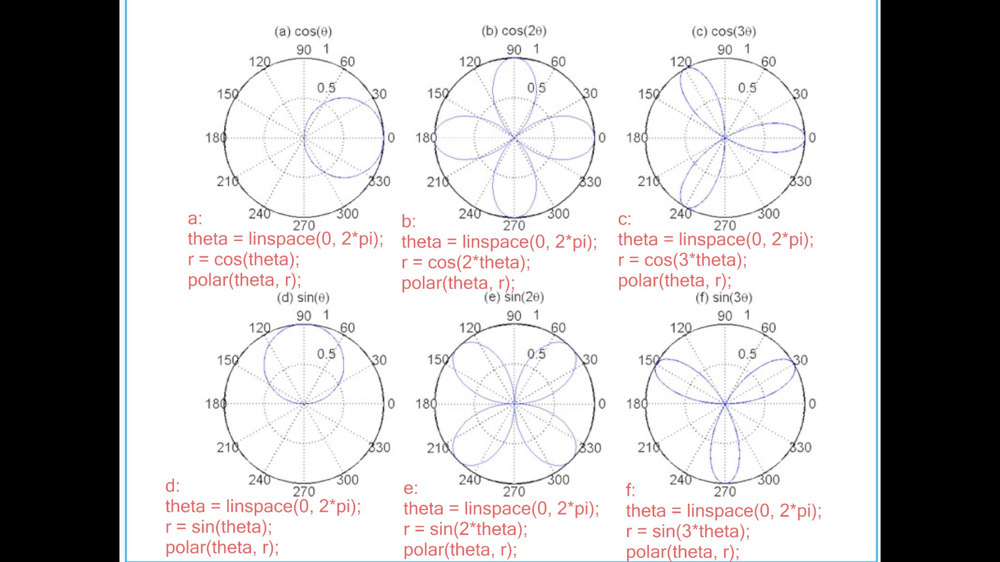
Please use the method of "描點作圖" to sketch the following cardioids (心臟線) in the polar coordinate system, assuming the range of θ is between 0 and 2*pi.
a. r = 1 - cos(θ)
b. r = 1 + cos(θ)
c. r = 1 - sin(θ)
d. r = 1 + sin(θ)
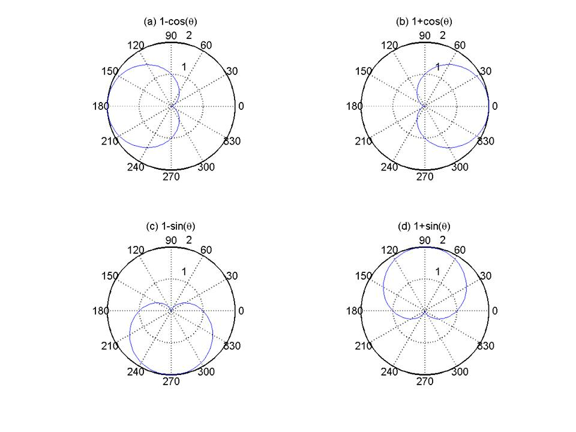
14. Matrix dimensions: Suppose A is a 5x4x3 array. Give the dimensions of the results after the following operations:
a.sum(A)
b.sum(A, 1)
c.sum(A, 2)
d.sum(A, 3)
e.sum(A(:))
f.sum(sum(sum(A)))
g.A(:, :)
h.A(:)
i.sum(A(:, :))
j.sum(A(:, :), 2)
a.1*4*3
b.1*4*3
c.5*1*3
d.5*4
e.1
f.1
g.5*12
h.60*1
i.1*12
j.5*1
可使用nan取代矩陣某一部份的值
ex:
[x,y,z] = peaks;
z(10:20,10:20) = nan;
surf(x,y,z);
16. A simple spiral in a 3D space (廖孟筠)
t = 0:pi/50:10*pi;
plot3(t,cos(t),sin(t));
17. Use scatter data for plotting 3D surface (柯翔俊)
scatter3
18. True or indexed colors (柯翔俊)
左邊：indexed color 右邊：true color
補充 (林湧達):
左圖程式碼(04-三維立體繪圖.ptt 第50頁)
右圖程式碼(04-三維立體繪圖.ptt 第63頁)
19. True color and indexed color (羅騏)
index color : 曲面上每個方塊先對應至顏色對應表(colormap)的索引，再依照顏色對應表索引的值賦予每個點顏色
Indexed color 省下了許多記憶體空間與轉換所需的時間，缺點為能使用的顏色有限．
true color : 直接給予每個點rgb三色的份量組合出各點的顏色，如果是24位元全彩的話，即r,g,b各8bit然後可組出2^24種顏色
較符合人眼所看到的真實顏色，但須耗費大量空間來存各點顏色的值
20. Display two surfaces using different colormaps（說明原理即可，不必寫程式驗證。）(羅騏)
將兩個colormap接起來，藉由調整colormap上索引值的範圍(可藉由caxis達到)
使左邊圖上各點的值都落在colormap索引值的上半段，右邊圖的顏色則落在下半段.
21. Theorem on gradients and contour curves(陳柏旻)
怎麼證明等高線和gradient是垂直的
r(t) = (x(t) , y(t));
f(x(t) , y(t)) = c(常數);
上式對t微分=> df(x(t) , y(t))/dt = ∂f/ ∂x*dx/dt + ∂f/ ∂y*dy/dt = 0;
其中∇ f(x,y) = (∂f/∂x , ∂f/∂y) = 梯度向量 ; dr(t)/dt = (dx/dt , dy/dt) = 切線向量;
=>∇ f(x,y) ‧ dr(t)/dt = 0 ; 兩向量內積為零所以垂直。
22. Parameter for constructing a crown(陳柏旻)
圖形會產生2n個峰, 圖上有8個, 故n = 4
23.
4個頂點投影到xy平面上
00 01 10 11
0 .3 .6 .9
找x = 2/3, y = 1/2
(2/3, 1/2) = {[(0,0)/3 + (1,0)*2/3] + [(0,1)/3 + (1,1)*2/3]}/2
對應colormap為(0/3 + 0.9*2/3 + 0.3/3 + 0.6*2/3)/2 = 0.55
----------------------------------------------------
23. (施真平)
0+(0.3-0)*2/3=0.2
0.9-(0.9-0.6)*2/3=0.7
0.2+(0.7-0.2)*1/2=0.45
The color value at x=2/3 and y=1/2 is 0.45
24. XOR identity
已從範例考題中移除
a
The XOR gate with inputs A and B implements the logical expression
AB'+A'B
x ⊕ y ⊕ y
= (xy’+x’y)⊕y
= (xy’+x’y)y’+(xy’+x’y)’y
= xy’+(xy’)’(x’y)’y
= xy’+(x’+y)(x+y’)y
= xy’+(x’y’+xy)y
= xy’+xy
= x(y'+y)
= x
b
The XNOR gate with inputs A and B implements the logical expression
AB+A'B'
((x ⊕ y)' ⊕ y)’
= ((xy+x’y’)y+(xy+x’y’)’y’
= xy+(xy’+x’y)y’
= xy+xy’
= x
25. Definition of eigenvalues and eigenvectors(李昌鴻)
A scalar λ is called an eigenvalue of the n × n matrix A is there is a nontrivial solution
x of Ax = λx. Such an x is called an eigenvector corresponding to the eigenvalue λ
26. About k-means clustering(李昌鴻)
(a) to find k points of a dataset that can best represent the dataset in a certain mathematical sense (to be detailed later). These k points are also known as cluster centers, prototypes, centroids, or codewords, and so on.
(b)
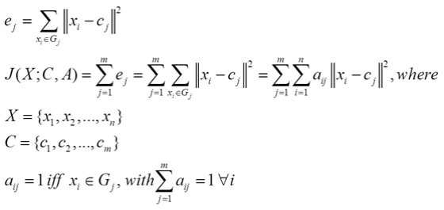
J(X; C, A) : objective function
ej: error function
xi:data point
cj: cluster center
Gj:the set with the cluster center cj
aij :flag to check whether xi belongs to Gj
n: the number of data point
m:the number of cluster
(c)
1.Initialize
Select initial m cluster centers
2.Find clusters
For each xi, assign the cluster with nearest center
è Find A to minimize J(X; C, A) with fixed C
3.Find centers
Recompute each cluster center as the mean of data in the cluster
è Find C to minimize J(X; C, A) with fixed A
4.Stopping criterion
Stop if clusters stay the same. Otherwise go to step 2.
(d)
1.When C (cluster centers) is fixed, we can easily identify the corresponding optimizing A such that the objective function J(X; C, A) is minimized. The optimizing A is equivalent to the clustering strategy that each data point belongs to the cluster whose centers is the nearest center to this data point.
2. When A (membership matrix) is fixed, we can simply find the optimizing centers such that the objective function J(X; C, A) is minimized. Since our objective function is the square error, the minimizing center for each cluster is the mean vector of all the data points in the cluster.

27. Some identities for k-means clustering(Andrew Lin)
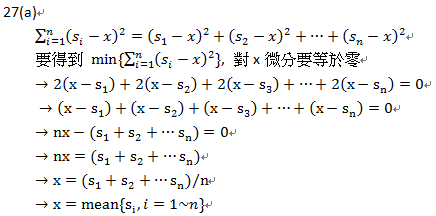
27(a)題目的arg minsXXX，是指找出一個s值可以使XXXmin。所以這題應該是要"對s為分要等於零"，不是對x微分
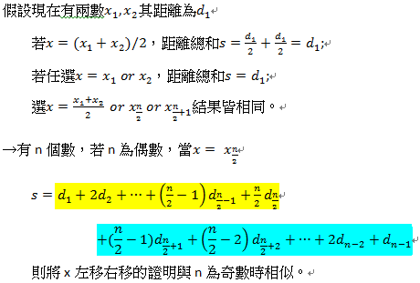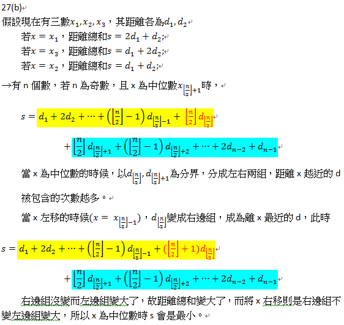
28. Compression ratio achieved by k-means clustering(Andrew Lin)
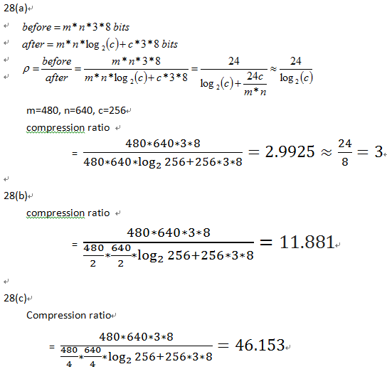
(a)What is the goal of PCA?
Sol :
An effective method for reducing dataset dimensions while keeping spatial characteristics as much as possible
(b)Please write down the objective function of PCA.
Sol :
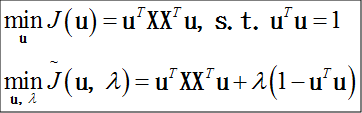
(c)Please derive the first principal component of PCA.
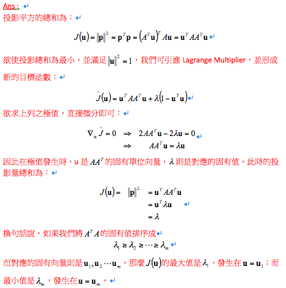
(d)Please derive the second principal component of PCA.
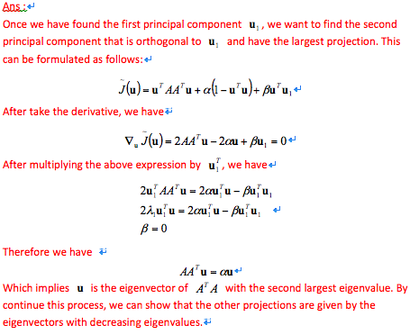
Sol:
根據 face recognition 的投影片第9 頁
要算FFT 的eigenvectors 可以經由下列公式得出我們只要計算出FTF 的eigenvector
在乘上F 即可
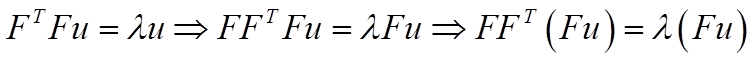
400 largest eigenvalues of AAT : 等於 ATA 的 400 個eigenvalues
eigenvectors of AAT : 先算ATA 的eigenvectors (u)在乘上A → Au
31. Ellipse fitting ((a) only.)
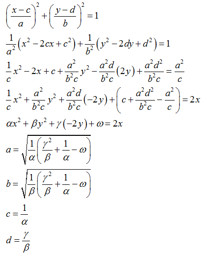
32. Circle fitting (Please try (a) only.)
2ax+2by+c^2-a^2-b^2=x^2+y^2
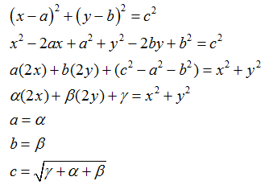
34. Display two indexed images on the same windows
[X1,map1]=imread('newicon.gif');
[X2,map2]=imread('video.gif');
map=[map1;map2], colormap(map);
subplot(1,2,1), image(X1), colorbar;
axis image;
subplot(1,2,2), image(X2+2), colorbar;
axis image;
35. Derivation of LSE(林季蓁)
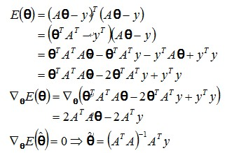 p.s. 1. 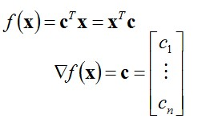 2. 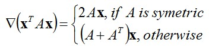 | |
36. Hybrid method for data fitting(林季蓁)
用Linear square(左除)找線性參數a,c、 DSS(fminsearch)找非線性參數b,d。
最小平方法可在非線性參數固定下直接找到最好線性參數的值，且因搜尋空間從四維降到二維，最佳化也更有效率。
補充： (張祐榕)
errorMeasure.m
function squaredError = errorMeasure(lambda, data)
x = data(:,1);
y = data(:,2);
A = [exp(lambda(1)*x) exp(lambda(2)*x)];
a = A\y; %此a不等同於要求的參數a
y2 = a(1)*exp(lambda(1)*x)+a(2)*exp(lambda(2)*x);
squaredError = sum((y-y2).^2);
nonlinearFit.m
lambda0 = [0 0];
lambda = fminsearch(@errorMeasure, lambda0, [], data);
%要求的參數b=lambda(1),d=lambda(2)
x = data(:, 1);
y = data(:, 2);
A = [exp(lambda(1)*x) exp(lambda(2)*x)];
a = A\y; %此a不等同於要求的參數a
%要求的參數a=a(1),c=a(2)
y2 = A*a;
plot(x, y, 'ro', x, y2, 'b-');
%x,y為原始data，x,y2為fitting後的data
%誤差平方和為 sum((y-y2).^2))
此方法可以產生較低的誤差平方和，同時所需的計算時間也比較短。
37.可使用變形法的數學模型（請見課本或投影片）(yi lin cheng)
變形法的目的是將一個非線性的數學模型，轉換成只包含線性參數的數學模型，方便作data fitting。目標的模型會是f(y)= α*g(x)+ β的形式。大部分轉換的方法都是取倒數，若有指數則取ln。
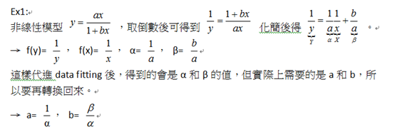
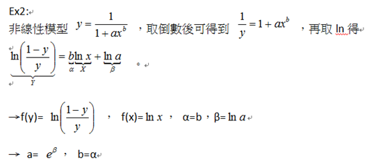
以下是講義上列出的範例
(資料參考課程投影片10-曲線擬合與迴歸分析.pptx)
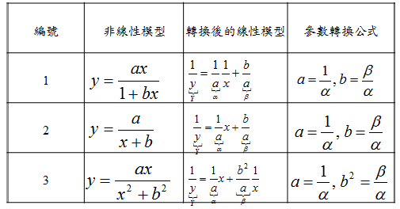
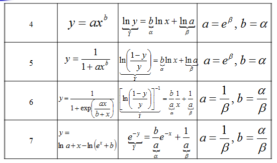
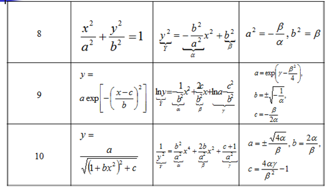
新題：
1. Sorting vectors(張祐榕)
[x2, pos] = sort(x)
x(pos)等於x2
[x3,pos2]=sort(pos);
x4=x2(pos2);
x4等於x
31.Matrix concatenation: Suppose that A = [1 2; 3 4] and B = [1 0; 0 1]. What is returned by each of the following statements?(林柏僑)
(1)cat(1, A, B)
Ans:
4*2 matrix
[1 2; 3 4; 1 0; 0 1]
(2)cat(2, A, B)
Ans:
2*4 matrix
[1 2 1 0; 3 4 0 1]
(3)cat(3, A, B)
Ans :
2*2*2 array
If C = cat(3, A, B)
C( :, :, 1) = [1 2; 3 4]
C( :, :, 2) = [1 0; 0 1]
(4)cat(4, A, B)
Ans :
2*2*1*2 array
If C = cat(4, A, B)
C( :, :, 1, 1) = [1 2; 3 4]
C( :, :, 1, 2) = [1 0; 0 1]
32.Sum of ND arrays: An array Z can be created by the following statements:
A = [1 1 1 1; 2 2 2 2; 3 3 3 3];
B = [0 0 0 0; 1 1 1 1; 1 2 3 4];
Z = cat(3, A, B);
What are the sizes of the returned arrays of the following statements?
(1)sum(Z, 1) Ans: 1*4*2
(2)sum(Z, 2) Ans: 3*1*2
(3)sum(Z, 3) Ans: 3*4
(4)sum(Z, 4) Ans: 3*4*2
39.Definition of eigenvalues and eigenvectors: What is the definition of eigenvalues and eigenvectors of a square matrix A?(簡上祐)
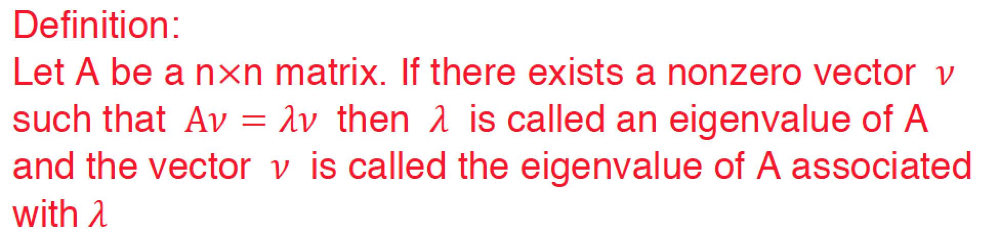
46.Find a point that has the minimum total squared distance to a set of lines or planes
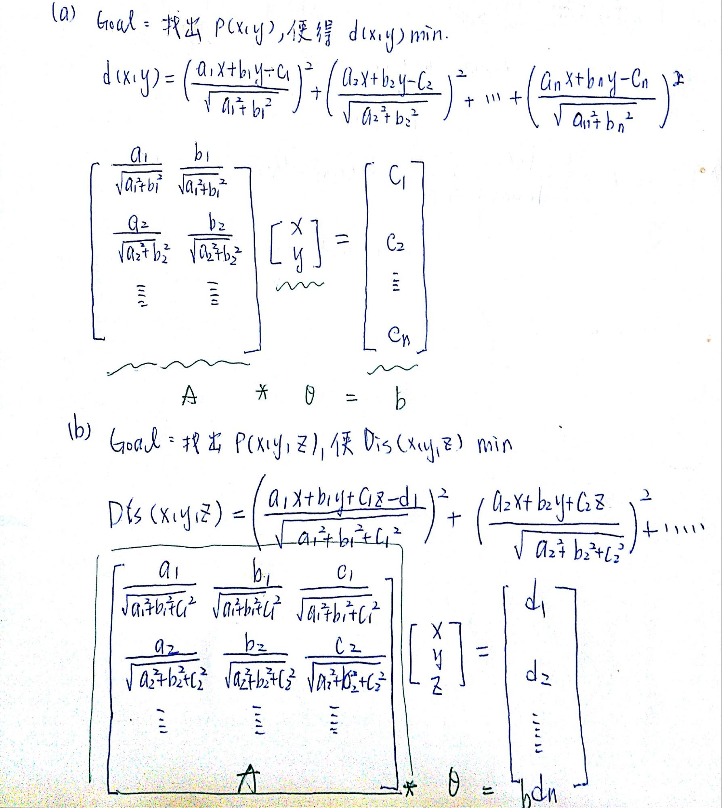